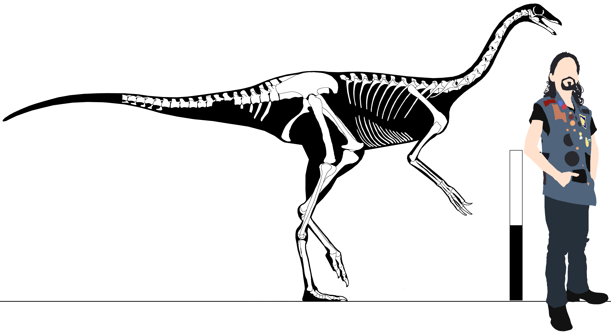

Clade Ornithomimosauria
Definition - enter
Diagnosis - enter
Comments - enter
Genus Struthiomimus Osborn, 1916
Struthiomimus altus Lambe, 1902
=Ornithomimus altus Lambe, 1902
Late Cretaceous, late Senonian epoch, late Campanian stage
Dinosaur Park Formation, Belly River Group
Red Deer River, Alberta, Canada
AMNH FR 5339 (Total length 3.99m) (Osborn, 1916)
Diagnosis - enter
Comments - enter

Skeletal reconstruction of Struthiomimus altus. Scale bar equals 1m, scaled as AMNH FR 5339.